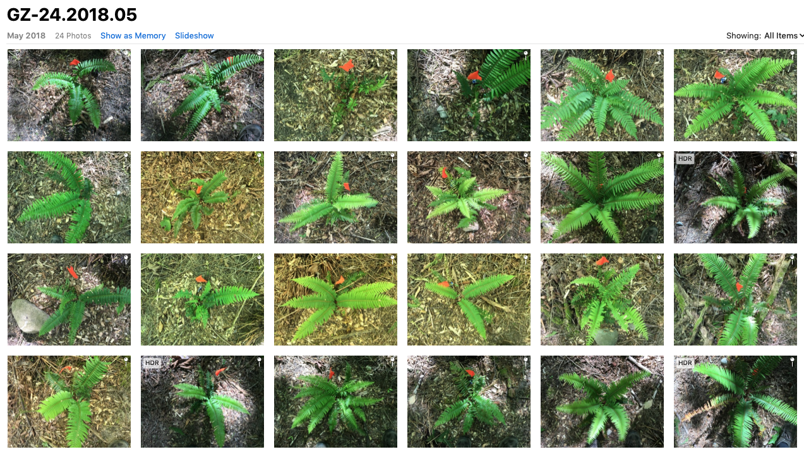
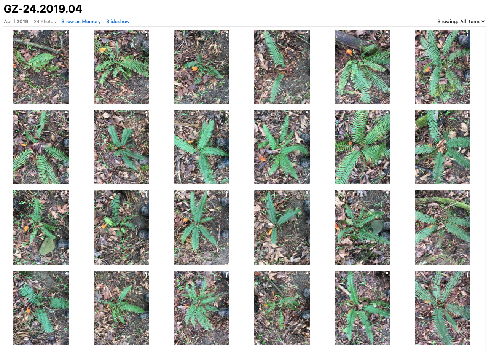
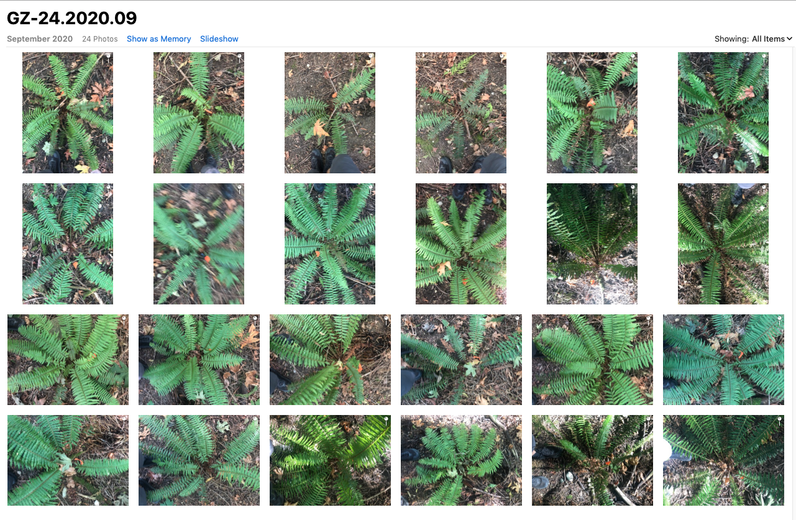

The die-off at Ground Zero had reached steady state by 2014, leaving almost entirely bare ground. 10% of the original ferns, as we assessed in a June 2019 study. This quarter acre was subject to erosion and likely undergoing further ecological degradation: underground mycorrhizal networks need photosynthesizing plants, of which there were very few. No natural restoration had taken place until a few fringecups - most happily - appeared in 2019.
Suzanne and planted three lines of 12 ferns, two lines at Ground Zero, 1 line just north of what was then the boundary of the expanding die-off region. I hypothesized that the agent of the die-off, whatever it turns out to be, was no longer active at Ground Zero, but that it was likely to be active and virulent at the die-off's leading edge.
This hypothesis was a generalization from a single fern planted at Ground Zero in 2014. Inspecting the die-off with Seattle Parks plant ecologist Jillian Weed, I asked, "What should we do?". "Monitor closely", she said, "and why don't you plant a couple of nursery ferns?". We did, I watered the pair through a couple of summers, and one (dubbed "Jillian Weed #1") is thriving now six years later. A 50% survival rate for restoration planting is better than I usually achieve. So I surmised that the die-off agent/s were gone - at least temporarily.
I water all 36 plants weekly during summer drought, two liters per palnt. The Ground Zero ferns (with one exception) are thriving. The northern line ("ADZ" for active die-off zone) is about 50% dead or dying. I have made every attempt to treat all three lines identically.
In April 2020, Bonnie Drew, Jeff Kelley and I twice independently surveyed all three lines. We counted fiddleheads, interpreting them as simple markers of overall plant health. Here are the results, summarized for each of the three 12-fern lines, in box plot form. The full dataset is available on request. We are grateful to Dylan Mendenhall for his analysis, on this and other projects.
I provisionally conclude that there is currently no active agent affecting ferns at Ground Zero. The degraded site is now recovering, which is very fine to see.
The agent - still unidentified - may of course return.



April 2019
Sixteen months after planting.
September 2020
Thirty-one months after planting.
May 2020 Report, Dylan Mendenhall, Page 1